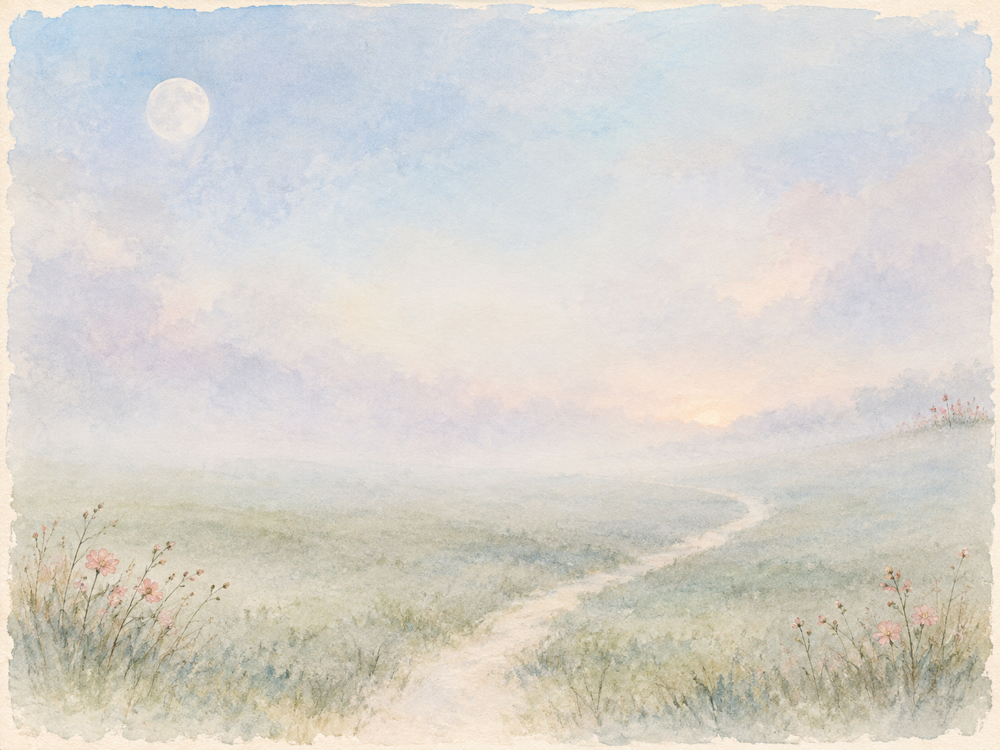

SIRIMIMI MAGAZINE
借鉴小角色与大色面的比例，以及用一个意外动作讲故事的方式。官方第 07 张样张中，草地上的小兔和天空里的兔子让背景承担情绪。作者也有细节繁复的作品，这里只选取适合本项目的构图。
实际查看了 PARCO 官方作品集页面及第 03、07 张样张。官方页面链接的作者账号为 @beco_plus81；Instagram 受登录限制，未完整浏览。用户上传的十张图片作为独立参考，不统一归属于 beco+81。
梦幻感来自留白、柔软的笔触和一点尚未揭开的心意。小兔子是故事里的陪伴者；花灯、粉花和小门，在散步时逐一遇见。
已确认的方向：明亮的水彩入口，探索后渐入暮色；电脑端采用小兔行走、镜头跟随，松手停下，更接近 Wayfinder 的探索方式。入口原背景已获认可，新增探索地面与整体构图仍待确认。以下记录参考来源与设计取舍，不是视觉验收或功能测试结论。


色票是本项目的配色建议，并非从参考作品精确采样。
借鉴小角色与大色面的比例，以及用一个意外动作讲故事的方式。官方第 07 张样张中，草地上的小兔和天空里的兔子让背景承担情绪。作者也有细节繁复的作品，这里只选取适合本项目的构图。
实际查看了 PARCO 官方作品集页面及第 03、07 张样张。官方页面链接的作者账号为 @beco_plus81；Instagram 受登录限制，未完整浏览。用户上传的十张图片作为独立参考，不统一归属于 beco+81。
参考角色行进、连续发现与环境回应形成的探索节奏：景物随移动进入视野，少量交互便能让空间产生变化。保留本项目已认可的水彩与小兔方向，不复制原作场景或人物。
本轮实机观察：在电脑端 1440×900 视口打开原站，按住右上位置约 3.5 秒，看到橙色角色行走、镜头跟随，以及草地和树进入画面；随后左右拖动转向，观察到角色朝向改变。已保存操作前、行进和转向截图。未验证完整收集、诗句生成或声音；这些观察也不代表生日花园的新实现已通过验收。
官方资料另行说明：玩家寻找并激活散落的诗意标记，唤出文字，带来花草生长、树叶舒展与鸟蝶出现，收集的文字逐步组成诗句。这部分来自 NFB 的作品介绍，尚未在本轮实机操作中完整验证。
以下是当前电脑端小兔行走版本的实际页面截图，方便对照入口、连续草地与走近发现的构图。入口原背景获认可，新增探索地面仍待确认；截图本身不代表视觉或功能验收。